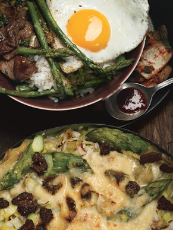

Korean Rice Bowl

Korean Rice Bowl with Steak, Asparagus, and Fried Egg.
This recipe is a take on bibimbap, a Korean dish often made up of rice topped with vegetables, sliced meat, a fried egg, and hot sauce. Serve with ice-cold beer.
Ingredients
- 1 tablespoon sesame seeds
- 3/4 teaspoon fleur de sel
- 1/2 teaspoon New Mexico chile powder
- 1 1/2 pounds New York strip steak, trimmed
- 1/4 cup soy sauce
- 3 tablespoons Asian sesame oil, divided
- 2 green onions, finely chopped
- 2 tablespoons sugar
- 1 tablespoon sake or dry Sherry
- 1 garlic clove, minced
- 1 1/2 pounds slender asparagus spears, trimmed
- 2 teaspoons vegetable oil plus additional for brushing
- 6 large eggs
- 6 cups freshly cooked medium-grain white rice
- Korean hot pepper paste (kochujang)
- Kimchi
Directions
- Toast sesame seeds in small skillet over medium heat until golden brown, stirring often, about 3 minutes. Transfer sesame seeds to small bowl to cool. Grind sesame seeds, fleur de sel, and chile powder in mortar with pestle or in spice mill until about half of sesame seeds are finely ground. Return to same small bowl. DO AHEAD: Sesame salt can be made 1 day ahead. Cover and let stand at room temperature.
- Place steak in freezer 1 hour for easy slicing. Cut steak crosswise into 1/8-inch-thick slices. Whisk soy sauce, 2 tablespoons sesame oil, green onions, sugar, sake, and garlic in medium bowl. Toss steak in soy mixture. Let marinate at room temperature 30 minutes, tossing occasionally.
- Heat griddle or 2 heavy large skillets over medium-high heat. Toss asparagus with 2 teaspoons vegetable oil on large rimmed baking sheet. Sauté asparagus until crisp-tender, about 4 minutes. Return to rimmed baking sheet. Sprinkle sesame salt over; drizzle with remaining 1 tablespoon sesame oil. Tent with foil to keep warm.
- Brush griddle with vegetable oil. Working in batches, grill steak until just browned, about 1 minute per side. Transfer to bowl; tent with foil to keep warm. Brush griddle with vegetable oil. Crack eggs onto hot griddle. Cook until whites are set but yolks are still runny, 2 to 3 minutes.
- Divide warm rice among bowls. Divide asparagus, then beef among bowls, placing atop rice. Top with fried egg. Serve with Korean hot pepper paste and kimchi.